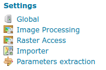
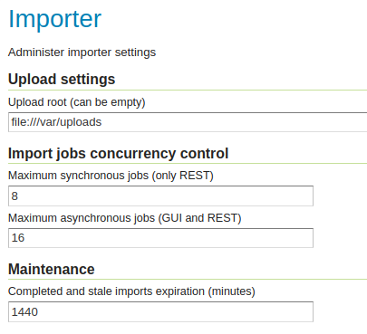

Configuring the Importer extension¶
The importer extension can be used without any explicit configuration, and by default it will:
Stage the REST uploads in a dedicated sub-folder of the data directory (
uploads).Pose no limit to the amount of concurrent imports executed.
It is however possible to configure the above using the “Importer” entry under the “Settings” menu:
The importer configuration menu entry¶
The configuration page looks as follows:
The importer configuration page¶
Entry |
Description |
|---|---|
Upload root |
The folder that will hold REST call uploads |
Maximum synchronous jobs |
How many synchronous jobs can be run in parallel. Synchronous jobs can only be run via the REST API. |
Maximum asynchronous jobs |
|
Maximum asynchronous jobs |
|
Completed and stale imports expiration |
How many minutes to wait, before removing an import from the database. Imports that are still running are ignored, while completed, errored, or imports that were created, but never started, are going to be considered for cleanup. Value is in minutes, set to zero or negative to never remove values. Defaults to 1440 minutes, one day. |
Importer Logging¶
The importer extension includes a new IMPORTER_LOGGING profile which may be selected in global settings.
This profile is quiet during normal operation (similar to
PRODUCTION_LOOGGING)Provides configuration and information logs on importer activity